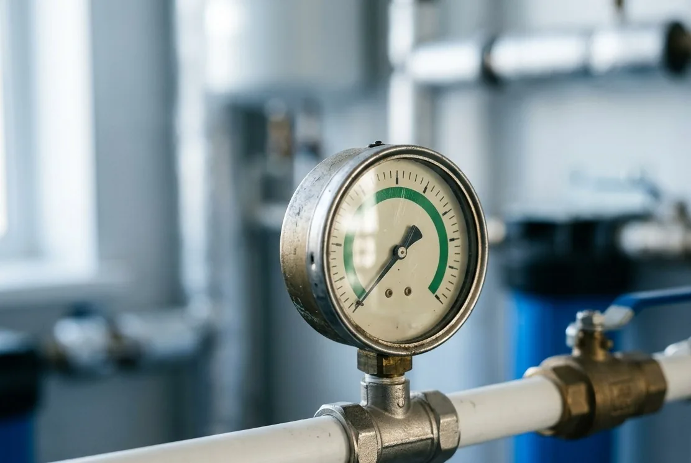

Состав услуги
- опрос и осмотр;
- проверка байпаса, давления и режимов;
- диагностика автоматики и дренажа;
- оценка расходников и загрузки;
- заключение с приоритетами.
Возврат запаха, налёта или падение напора не всегда означают, что нужно менять всю загрузку или клапан. Сначала фиксируем симптомы и проверяем систему по узлам.

По телефону отделяем аварийную ситуацию от ухудшения качества и собираем документы.
Очерчиваем границы осмотра: какие узлы вскрываем, какие измерения делаем и в какой момент останавливаемся, чтобы обсудить находки.
Проверяем узлы последовательно, не заменяя детали наугад.
Отдаём заключение с измерениями, разделяем срочное и терпящее, рядом кладём смету на устранение – дальше решение за хозяином дома.
Работы после подтверждения причины.
ОткрытьЕсли схема больше не соответствует воде.
ОткрытьСамопроверка до вызова.
ОткрытьДиагностика ищет причину и заканчивается заключением с приоритетами, ремонт – согласованные работы после него. Приехать сразу с запчастями можно только угадывая, а угадывание оплачивает хозяин дома. Поэтому сначала измерения и проверка узлов, потом смета на конкретную неисправность.
Причин обычно несколько: забитый элемент, неправильно настроенная промывка, слежавшаяся загрузка, подсевший насос или просто прикрытый кран на байпасе. Разделяются они замерами давления в разных точках, а не на глаз. Часть проверок вы можете сделать до вызова, и мы подскажем, какие именно.
Фото системы целиком и крупно шильдиков, описание симптома с датой появления, старый анализ, если он сохранился, и историю сервиса. Хорошо помогает короткое видео работы клапана в момент промывки. Чем полнее вводные, тем меньше шансов, что потребуется второй визит за деталями.
Исчерпание загрузки – один из возможных выводов, но перед ним проверяются настройки, байпас, качество промывки, давление и изменившийся анализ. Дорогая замена без этих проверок – ставка, а не диагноз. Мы фиксируем измерения письменно, чтобы вывод можно было перепроверить у кого угодно.
Такое бывает: часть проблем проявляется эпизодически или лежит вне системы очистки – в источнике, насосе или разводке дома. Тогда честный результат – суженный круг причин, зафиксированные наблюдения и план, что замерить дальше. Это полезнее, чем заменённый наугад узел и та же самая вода.
Ответим, что проверить и сколько это будет стоить.